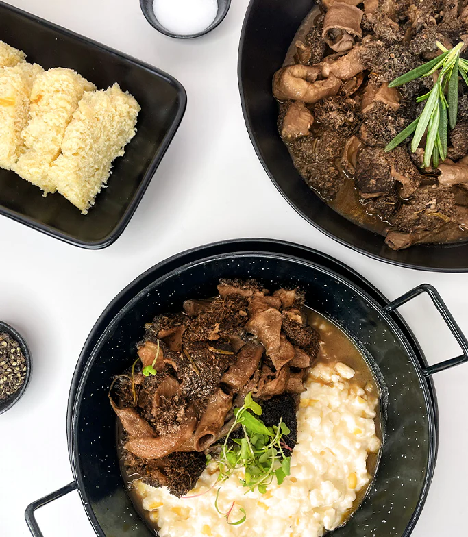

It's a South African dish consisting of stew (Tripe) and stomach lining (Mala) served hot as healthy protein. It can also be traced to neighbouring countries such as Lesotho and Botswana. This delicious delicacy is often enjoyed during the winter as a warm and snug hearty meal.

Instructions for the tripe
Put the Tripe in a bowl, then sprinkle the salt over it and add water.
Let it soak for about an hour, rinse it under running water.
Cut it into bite-size pieces, and then place in a saucepan.
Add a small amount of salt and then water. Boil it for about 3 hours
under low heat to tender properly.
Pour the oil into a skillet, add the chilli, paprika, bay leaves and
masala garlic and stir over the low heat.
Add the tomatoes, continue stirring and let it cook for about 2 minutes.
Add the yoghurt, and stir for the sauce to be thick over low heat.
Add the tripe, and allow it to cook for about 2 minutes. You can garnish
it and serve it hot.
Ingredients for Samp
Instructions:
Bring the samp and water to the boil. Once boiling, lower the heat and
simmer for 30 minutes or until soft.
Drain off excess liquid if necessary.
Fry the onion in the butter until just soft. Add to the samp together
with the Aromat, Cremora, cream cheese and carrots.
Simmer over low heat for 5 minutes. 4. Add the parsley and mix through.
Serve warm.
Servings:4
Recipe from
TAS